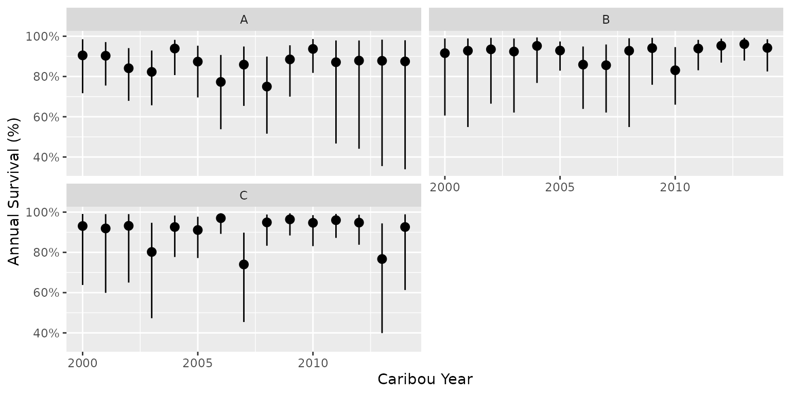
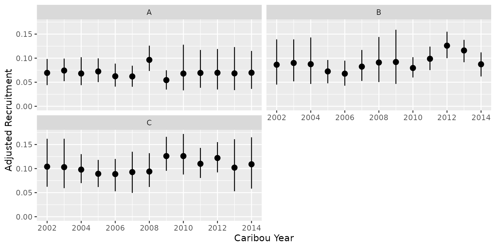
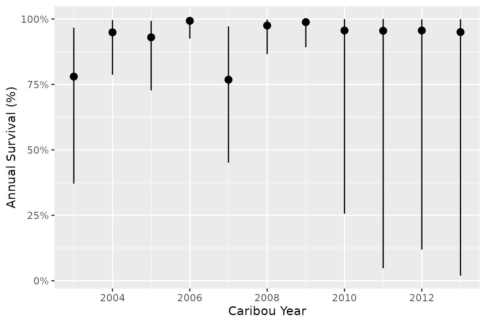
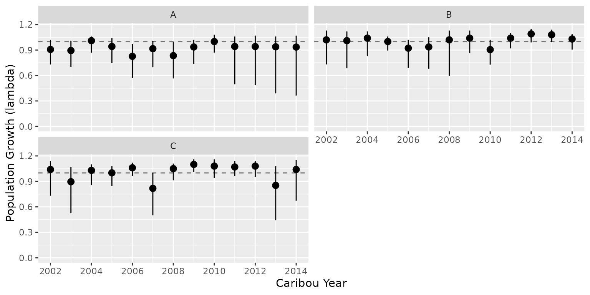

Multi-Population Analysis and Other Extensions
Source:vignettes/articles/extensions.Rmd
extensions.Rmdbboutools supports several extensions to the standard
single-population monthly survival workflow. These include
multi-population analysis, aggregate annual survival data, predictions
for unobserved years, prior-only sampling and other features described
below.
Multi-Population Analysis
bboutools can fit models to data from multiple
populations simultaneously. The fitting functions auto-detect multiple
populations from the PopulationName column.
Data format
Multi-population data has the same columns as single-population data,
with different values in PopulationName.
surv_multi <- bboudata::bbousurv_multi[!is.na(bboudata::bbousurv_multi$Month), ]
head(surv_multi)
#> # A tibble: 6 × 6
#> PopulationName Year Month StartTotal MortalitiesCertain MortalitiesUncertain
#> <chr> <int> <int> <int> <int> <int>
#> 1 A 2001 1 17 0 0
#> 2 A 2001 2 17 0 0
#> 3 A 2001 3 17 0 0
#> 4 A 2001 4 24 0 0
#> 5 A 2001 5 28 0 0
#> 6 A 2001 6 28 0 0Populations can have different year ranges.
Fitting
No special argument is needed. The function
bb_fit_survival() detects multiple populations and fits a
single model with population-indexed parameters.
set.seed(101)
survival_multi <- bb_fit_survival(surv_multi, quiet = TRUE)The tidy() output shows population-indexed parameters.
The intercept b0, year trend bYear, annual
effects bAnnual and month effects bMonth are
estimated for each population. The standard deviations
sAnnual and sMonth are shared across
populations.
tidy(survival_multi, include_random_effects = FALSE)
#> # A tibble: 8 × 4
#> term estimate lower upper
#> <term> <dbl> <dbl> <dbl>
#> 1 b0[1] 4.51 3.7 5.38
#> 2 b0[2] 5.01 4.2 6.19
#> 3 b0[3] 5.03 4.12 6
#> 4 bYear[1] 0 0 0
#> 5 bYear[2] 0 0 0
#> 6 bYear[3] 0 0 0
#> 7 sAnnual 0.808 0.554 1.29
#> 8 sMonth 0.992 0.662 1.52Predictions and plots
Prediction and plot functions work as with single-population models.
Plots are automatically faceted by PopulationName.
pred_multi <- bb_predict_survival(survival_multi)
bb_plot_year_survival(pred_multi)
The default faceting can be overridden since all plot functions
return ggplot2 objects.
bb_plot_year_survival(pred_multi) + facet_wrap(~PopulationName, ncol = 3)The recruitment model supports the same multi-population structure.
rec_multi <- bboudata::bbourecruit_multi[
!is.na(bboudata::bbourecruit_multi$Month),
]
set.seed(101)
recruitment_multi <- bb_fit_recruitment(rec_multi, quiet = TRUE)
pred_rec_multi <- bb_predict_recruitment(recruitment_multi)
bb_plot_year_recruitment(pred_rec_multi)
See the analytical methods article for details on the multi-population model specification.
Multi-population Maximum Likelihood models are not currently supported.
Aggregate Annual Survival Data
Survival data can be provided as one row per population per year, instead of monthly records. This is useful when monthly collar data is not available and only annual summaries exist.
Data format
Annual survival data uses the same columns as monthly data. Set
Month to the year_start value (default
4L for April).
surv_annual <- bboudata::bbousurv_annual
surv_annual_c <- surv_annual[surv_annual$PopulationName == "C", ]
head(surv_annual_c)
#> # A tibble: 6 × 6
#> PopulationName Year Month StartTotal MortalitiesCertain MortalitiesUncertain
#> <chr> <int> <int> <int> <int> <int>
#> 1 C 2003 4 10 3 0
#> 2 C 2004 4 15 3 0
#> 3 C 2005 4 20 3 0
#> 4 C 2006 4 23 0 0
#> 5 C 2007 4 26 10 0
#> 6 C 2010 4 29 2 0Fitting
Annual data is auto-detected from the input. No special argument is needed.
set.seed(101)
survival_annual <- bb_fit_survival(surv_annual_c, quiet = TRUE)When annual data is provided, the model has no month random effect
(bMonth is fixed to zero) and the ^12
annualization used to convert monthly to annual survival is skipped.
Predictions
The function bb_predict_survival() works as normal for
annual fits.
bb_predict_survival(survival_annual)
#> # A tibble: 9 × 6
#> PopulationName CaribouYear Month estimate lower upper
#> <fct> <int> <int> <dbl> <dbl> <dbl>
#> 1 C 2003 NA 0.808 0.476 0.94
#> 2 C 2004 NA 0.835 0.659 0.946
#> 3 C 2005 NA 0.868 0.713 0.958
#> 4 C 2006 NA 0.953 0.87 0.995
#> 5 C 2007 NA 0.684 0.509 0.835
#> 6 C 2010 NA 0.92 0.813 0.98
#> 7 C 2011 NA 0.934 0.83 0.987
#> 8 C 2012 NA 0.942 0.838 0.988
#> 9 C 2013 NA 0.836 0.656 0.929Calling
bb_predict_survival(survival_annual, month = TRUE) will
error, since monthly predictions are not meaningful for annual fits.
Predictions from annual and monthly models are both on the annual
survival scale and are directly comparable.
Predicting Unobserved Years
Predictions can be generated for years with no observed data. This is
done by adding placeholder rows to the input data and setting
allow_missing = TRUE.
Data format
A placeholder row has PopulationName and
Year filled in, with all measurement columns set to
NA_integer_.
surv_missing <- bboudata::bbousurv_missing
head(surv_missing)
#> # A tibble: 6 × 6
#> PopulationName Year Month StartTotal MortalitiesCertain MortalitiesUncertain
#> <chr> <int> <int> <int> <int> <int>
#> 1 C 2003 3 0 0 0
#> 2 C 2003 4 10 2 0
#> 3 C 2003 5 5 0 0
#> 4 C 2003 6 5 1 0
#> 5 C 2003 7 4 0 0
#> 6 C 2003 8 3 0 0
# Placeholder rows have NA in the Month column
surv_missing[is.na(surv_missing$Month), ]
#> # A tibble: 4 × 6
#> PopulationName Year Month StartTotal MortalitiesCertain MortalitiesUncertain
#> <chr> <int> <int> <int> <int> <int>
#> 1 C 2010 NA NA NA NA
#> 2 C 2011 NA NA NA NA
#> 3 C 2012 NA NA NA NA
#> 4 C 2013 NA NA NA NAFitting
set.seed(101)
survival_missing <- bb_fit_survival(
surv_missing,
allow_missing = TRUE,
quiet = TRUE
)Predictions
For unobserved years, the year random effects (bAnnual)
are sampled from their prior distribution
(Normal(0, sAnnual)) rather than being informed by data.
This means predictions reflect the population-level mean with additional
uncertainty from the year effect prior, giving wider credible intervals
than observed years where the data constrains the year effect.
pred_missing <- bb_predict_survival(survival_missing)
bb_plot_year_survival(pred_missing)
This approach works for years within or beyond the range of observed data. It requires random year effects (not fixed effects), since the model must include the hierarchical year structure. Unobserved year predictions are only supported for Bayesian models.
Prior-Only Sampling
Sampling from prior distributions without observed data enables prior predictive checks. This is useful for verifying that priors produce ecologically plausible predictions before fitting to data, particularly when using disturbance-informed national priors.
Workflow
Provide a data frame where PopulationName and
Year are filled in but all measurement columns are
NA. Set allow_missing = TRUE.
# Build placeholder data
recruit_prior <- data.frame(
PopulationName = "A",
Year = 2020:2030,
Month = NA_integer_,
Day = NA_integer_,
Cows = NA_integer_,
Bulls = NA_integer_,
UnknownAdults = NA_integer_,
Yearlings = NA_integer_,
Calves = NA_integer_
)
# Low disturbance scenario
priors_low <- bb_priors_recruitment_national(anthro = 10, fire_excl_anthro = 5)
set.seed(1)
fit_low <- bb_fit_recruitment(
data = recruit_prior,
niters = 1000,
allow_missing = TRUE,
year_trend = TRUE,
priors = priors_low,
quiet = TRUE
)
pred_low <- bb_predict_recruitment(fit_low)
bb_plot_year_recruitment(pred_low)With year_trend = FALSE (default), all years are
exchangeable and marginal predictions are identical across years. The
year_trend = TRUE option allows temporal patterns from the
bYear prior to appear in predictions.
Prior-only sampling is only supported for Bayesian models. See the priors article for more information on national priors and data rescaling.
Growth Predictions with Mismatched Fits
The functions bb_predict_growth() and
bb_predict_population_change() auto-filter to the
intersection of populations and years when survival and recruitment fits
cover different ranges. An informative message reports what was
excluded.
growth <- bb_predict_growth(survival_multi, recruitment_multi)
#> Filtering to shared population and year combinations. CaribouYears in survival only: 2000, 2001.
bb_plot_year_growth(growth)
If there are no shared population-year combinations, an empty tibble is returned.
Raw MCMC Samples
All bb_predict_*() functions have
bb_predict_*_samples() counterparts that return raw MCMC
samples instead of summarized estimates. These are useful for custom
uncertainty analyses.
x <- bb_predict_survival_samples(survival_annual)
names(x)
#> [1] "samples" "data"
head(x$samples)
#> , , 1
#>
#> [,1] [,2] [,3] [,4] [,5] [,6] [,7]
#> [1,] 0.8100703 0.8328225 0.8990700 0.7512339 0.8211276 0.8807257 0.8743078
#> [2,] 0.9238838 0.8245992 0.7577845 0.8189265 0.7930301 0.5303166 0.8641353
#> [3,] 0.5880067 0.7304969 0.8157142 0.7416115 0.8141208 0.8081028 0.8096746
#> [,8] [,9] [,10] [,11] [,12] [,13] [,14]
#> [1,] 0.7846362 0.8198930 0.8315293 0.5411449 0.9003593 0.8051385 0.5582257
#> [2,] 0.8532382 0.7692350 0.7014759 0.7047861 0.7555578 0.8272819 0.8933403
#> [3,] 0.7360473 0.7054802 0.6285257 0.8122481 0.4219754 0.8295529 0.9042276
#> [,15] [,16] [,17] [,18] [,19] [,20] [,21]
#> [1,] 0.8668522 0.7635840 0.7534132 0.6752304 0.8134217 0.8952287 0.5693488
#> [2,] 0.7951685 0.7876833 0.8633726 0.6656884 0.7629868 0.8916369 0.9071309
#> [3,] 0.8774068 0.6856384 0.8419345 0.8145904 0.7597264 0.8516626 0.8139380
#> [,22] [,23] [,24] [,25] [,26] [,27] [,28]
#> [1,] 0.7468098 0.9421215 0.8766044 0.8685347 0.9836947 0.8522096 0.8564739
#> [2,] 0.8468165 0.8969447 0.9185559 0.5508445 0.7904945 0.6405212 0.7738015
#> [3,] 0.7725931 0.8291788 0.9017913 0.7267522 0.6992850 0.8723192 0.6542679
#> [,29] [,30] [,31] [,32] [,33] [,34] [,35]
#> [1,] 0.7383450 0.8271721 0.8875011 0.4262374 0.8141064 0.7730571 0.8730336
#> [2,] 0.8647817 0.5905949 0.8075227 0.6710467 0.5344299 0.5477466 0.7558449
#> [3,] 0.7091833 0.8378856 0.8569975 0.7276413 0.8126181 0.8898369 0.6980845
#> [,36] [,37] [,38] [,39] [,40] [,41] [,42]
#> [1,] 0.6195000 0.7456662 0.9196607 0.5829161 0.7037264 0.6435583 0.8963820
#> [2,] 0.8663753 0.7643604 0.7744783 0.8153313 0.7726081 0.4196870 0.8058030
#> [3,] 0.7850245 0.8293675 0.7508207 0.6216705 0.8888044 0.6416695 0.9497972
#> [,43] [,44] [,45] [,46] [,47] [,48] [,49]
#> [1,] 0.7841771 0.9263563 0.8170395 0.7463283 0.8619600 0.7372546 0.9107587
#> [2,] 0.7620853 0.8463511 0.8143873 0.8939234 0.8547188 0.6750149 0.8600775
#> [3,] 0.8586423 0.7714185 0.8008535 0.8710972 0.7598697 0.9590951 0.8618687
#> [,50] [,51] [,52] [,53] [,54] [,55] [,56]
#> [1,] 0.8369435 0.5463371 0.8573501 0.6526534 0.8107696 0.7969534 0.6873653
#> [2,] 0.8723852 0.7900491 0.9331585 0.3366803 0.8379062 0.7484743 0.9425491
#> [3,] 0.9212059 0.5329239 0.8361467 0.6845912 0.7484464 0.8481787 0.9256950
#> [,57] [,58] [,59] [,60] [,61] [,62] [,63]
#> [1,] 0.8586997 0.9099490 0.8280727 0.6255021 0.8498267 0.9380145 0.6376911
#> [2,] 0.9047329 0.8836313 0.9354116 0.6722869 0.7217318 0.8040429 0.7941548
#> [3,] 0.7610538 0.8678330 0.9436548 0.7334547 0.7736738 0.7865973 0.8702353
#> [,64] [,65] [,66] [,67] [,68] [,69] [,70]
#> [1,] 0.8017054 0.3338572 0.7926214 0.6760746 0.8591673 0.8028355 0.5164189
#> [2,] 0.9225951 0.8954302 0.7325501 0.7628435 0.3820068 0.7503877 0.7765615
#> [3,] 0.8500770 0.8448014 0.7671730 0.8370517 0.8342128 0.5888692 0.8395882
#> [,71] [,72] [,73] [,74] [,75] [,76] [,77]
#> [1,] 0.8919600 0.7349450 0.8396727 0.7284589 0.7823173 0.7870130 0.5672428
#> [2,] 0.6503320 0.8492333 0.6059178 0.9074754 0.8750516 0.9032515 0.3159498
#> [3,] 0.6280472 0.5117538 0.7130307 0.8417812 0.8406776 0.8805779 0.8120334
#> [,78] [,79] [,80] [,81] [,82] [,83] [,84]
#> [1,] 0.7793890 0.8554130 0.7337111 0.7793924 0.6603114 0.8905571 0.8080208
#> [2,] 0.6396056 0.5940490 0.6281076 0.6278698 0.6628142 0.6022987 0.6752844
#> [3,] 0.8791846 0.8722574 0.8479166 0.7488208 0.9283555 0.8964176 0.8695403
#> [,85] [,86] [,87] [,88] [,89] [,90] [,91]
#> [1,] 0.8270506 0.8549400 0.8277871 0.9456186 0.7619716 0.7874446 0.8042569
#> [2,] 0.8367249 0.8960159 0.8320300 0.8768826 0.8919049 0.7439260 0.7343759
#> [3,] 0.7119678 0.9062449 0.4431451 0.7892155 0.8451588 0.5397931 0.8709981
#> [,92] [,93] [,94] [,95] [,96] [,97] [,98]
#> [1,] 0.8885190 0.9317869 0.8037340 0.6021400 0.6559141 0.8691621 0.8176755
#> [2,] 0.7682111 0.7800728 0.8126976 0.6990013 0.7020015 0.7480573 0.7909865
#> [3,] 0.8083182 0.7916754 0.6965616 0.8992922 0.5588646 0.8855327 0.9319988
#> [,99] [,100]
#> [1,] 0.9331796 0.8836836
#> [2,] 0.7395588 0.8707166
#> [3,] 0.8467371 0.9660237
#>
#> , , 2
#>
#> [,1] [,2] [,3] [,4] [,5] [,6] [,7]
#> [1,] 0.8293867 0.7311051 0.9336984 0.8639506 0.8398274 0.7271077 0.8916298
#> [2,] 0.8873797 0.8681714 0.8369724 0.9074485 0.8392773 0.8997494 0.8266006
#> [3,] 0.6746982 0.7292853 0.7841578 0.8187604 0.9006604 0.7195872 0.7995201
#> [,8] [,9] [,10] [,11] [,12] [,13] [,14]
#> [1,] 0.8780739 0.9059842 0.8520349 0.8787033 0.8177614 0.9179396 0.6573988
#> [2,] 0.7024160 0.8093073 0.7444704 0.8036637 0.8537575 0.7247583 0.7485156
#> [3,] 0.9030053 0.9504198 0.8388340 0.9017147 0.5775758 0.8226344 0.8807530
#> [,15] [,16] [,17] [,18] [,19] [,20] [,21]
#> [1,] 0.8369408 0.8280352 0.8234930 0.8498158 0.8161856 0.8586348 0.7500366
#> [2,] 0.9305410 0.7270518 0.8425565 0.8683086 0.7226480 0.9081365 0.9340098
#> [3,] 0.8132049 0.6791910 0.8150912 0.8198546 0.9469997 0.7346267 0.9129579
#> [,22] [,23] [,24] [,25] [,26] [,27] [,28]
#> [1,] 0.8855860 0.9425874 0.8476553 0.9548032 0.8107868 0.7916221 0.9491966
#> [2,] 0.9204855 0.8912619 0.9157908 0.7269239 0.8454117 0.9194586 0.8153364
#> [3,] 0.8555252 0.7055170 0.7695387 0.8932254 0.7748247 0.7690427 0.7173810
#> [,29] [,30] [,31] [,32] [,33] [,34] [,35]
#> [1,] 0.8011630 0.7547088 0.9222943 0.8130967 0.7896388 0.8296530 0.8346123
#> [2,] 0.8100982 0.8591612 0.7211850 0.5980312 0.7941119 0.7787029 0.8634473
#> [3,] 0.8065386 0.9007199 0.8531560 0.7934420 0.7035387 0.7312174 0.8194325
#> [,36] [,37] [,38] [,39] [,40] [,41] [,42]
#> [1,] 0.8460653 0.8172861 0.7647252 0.6831386 0.8778357 0.8528962 0.9296982
#> [2,] 0.8544311 0.8910292 0.9386935 0.8280755 0.9304470 0.8806999 0.9814696
#> [3,] 0.7954272 0.9149802 0.8333634 0.8084516 0.7736039 0.6703391 0.8534657
#> [,43] [,44] [,45] [,46] [,47] [,48] [,49]
#> [1,] 0.7811261 0.8948840 0.8589858 0.8845901 0.7623304 0.9238319 0.8563279
#> [2,] 0.7525711 0.8410882 0.8704187 0.7901223 0.8445063 0.8115907 0.8803641
#> [3,] 0.8009595 0.7123385 0.8674800 0.8461334 0.9057415 0.8418792 0.8630210
#> [,50] [,51] [,52] [,53] [,54] [,55] [,56]
#> [1,] 0.6774996 0.8507111 0.8375339 0.8852542 0.8939923 0.8588805 0.7689726
#> [2,] 0.8168257 0.8089686 0.8283668 0.8082810 0.8585731 0.8446993 0.7768397
#> [3,] 0.8748812 0.6155297 0.5301974 0.9572894 0.8225471 0.9194190 0.8544440
#> [,57] [,58] [,59] [,60] [,61] [,62] [,63]
#> [1,] 0.8462371 0.7533872 0.8803979 0.8625208 0.9303752 0.7874693 0.8197173
#> [2,] 0.8906101 0.9044991 0.8083001 0.9108421 0.8200310 0.8859758 0.8022308
#> [3,] 0.7579061 0.9053719 0.7452506 0.8748790 0.8720810 0.8812737 0.8327380
#> [,64] [,65] [,66] [,67] [,68] [,69] [,70]
#> [1,] 0.9533242 0.7683925 0.9169126 0.7574053 0.9224265 0.9330959 0.8090889
#> [2,] 0.8750712 0.7188973 0.8041502 0.6621094 0.6725660 0.7730831 0.9320745
#> [3,] 0.9174009 0.7602372 0.8157698 0.8170600 0.9108447 0.8063568 0.8496216
#> [,71] [,72] [,73] [,74] [,75] [,76] [,77]
#> [1,] 0.8148795 0.7898443 0.8823886 0.8117362 0.8195257 0.8577727 0.9272104
#> [2,] 0.8076728 0.9029436 0.9609612 0.9326824 0.8510755 0.8659497 0.6617831
#> [3,] 0.7947315 0.8673826 0.7856433 0.8822647 0.8186052 0.9148140 0.8845194
#> [,78] [,79] [,80] [,81] [,82] [,83] [,84]
#> [1,] 0.9304156 0.8542400 0.8887304 0.9083874 0.8427650 0.9394655 0.8794863
#> [2,] 0.7662508 0.8600049 0.9448754 0.7508172 0.8361367 0.6655703 0.6935361
#> [3,] 0.8525972 0.8116240 0.7776032 0.8091174 0.8676534 0.6505736 0.6970490
#> [,85] [,86] [,87] [,88] [,89] [,90] [,91]
#> [1,] 0.9101032 0.6372443 0.8818551 0.8348509 0.7680798 0.7874888 0.7567610
#> [2,] 0.6789243 0.8887513 0.8472573 0.9083839 0.7610991 0.9404909 0.8704755
#> [3,] 0.8266824 0.9102422 0.9131952 0.9066883 0.7732072 0.7812563 0.6919923
#> [,92] [,93] [,94] [,95] [,96] [,97] [,98]
#> [1,] 0.8950414 0.7728260 0.7932243 0.8319341 0.7280164 0.8531637 0.8521593
#> [2,] 0.7147997 0.7641965 0.7766775 0.7307407 0.6540238 0.8853885 0.7961907
#> [3,] 0.7006307 0.8681243 0.6867075 0.8204617 0.7570312 0.8580996 0.8934793
#> [,99] [,100]
#> [1,] 0.7804450 0.9200551
#> [2,] 0.7794402 0.7983124
#> [3,] 0.8410643 0.8252591
#>
#> , , 3
#>
#> [,1] [,2] [,3] [,4] [,5] [,6] [,7]
#> [1,] 0.8951500 0.9107236 0.8041130 0.9535924 0.8282742 0.8502156 0.7566478
#> [2,] 0.8158645 0.6816880 0.8400046 0.8374145 0.7698017 0.8369123 0.8594950
#> [3,] 0.9081653 0.8264055 0.8811966 0.8177609 0.8986505 0.9483199 0.8151739
#> [,8] [,9] [,10] [,11] [,12] [,13] [,14]
#> [1,] 0.8437907 0.8467502 0.8896888 0.9083972 0.8083448 0.8848419 0.8900466
#> [2,] 0.7658273 0.9217423 0.8453742 0.8551429 0.9099919 0.8003665 0.9596853
#> [3,] 0.9338432 0.8043243 0.8982171 0.8996577 0.8654528 0.8723985 0.9446332
#> [,15] [,16] [,17] [,18] [,19] [,20] [,21]
#> [1,] 0.8997366 0.8346078 0.8830437 0.8909072 0.9112686 0.7400774 0.8921982
#> [2,] 0.8852777 0.8769669 0.8357654 0.7681840 0.8412224 0.9001914 0.8812081
#> [3,] 0.8737531 0.9190535 0.8698283 0.8814223 0.7759807 0.7344760 0.9165530
#> [,22] [,23] [,24] [,25] [,26] [,27] [,28]
#> [1,] 0.8608584 0.9632909 0.8735285 0.8986076 0.9014225 0.8323764 0.9402781
#> [2,] 0.8836648 0.8685428 0.8689913 0.8407546 0.9559023 0.9316712 0.8940689
#> [3,] 0.8531180 0.8454558 0.8486527 0.8450087 0.7811114 0.9621437 0.9074657
#> [,29] [,30] [,31] [,32] [,33] [,34] [,35]
#> [1,] 0.7852975 0.6465497 0.7409607 0.8846483 0.9479749 0.8249267 0.8655759
#> [2,] 0.7967953 0.8701877 0.8081394 0.7255014 0.8964806 0.8810424 0.9533713
#> [3,] 0.8587880 0.8298049 0.8478950 0.8160541 0.7796005 0.8161459 0.9221744
#> [,36] [,37] [,38] [,39] [,40] [,41] [,42]
#> [1,] 0.8370325 0.8712001 0.8230425 0.7608727 0.8201963 0.8312390 0.8093533
#> [2,] 0.8752257 0.9054110 0.7347317 0.9395892 0.8830635 0.8448732 0.9197452
#> [3,] 0.9034119 0.8916923 0.8983554 0.7945879 0.7817754 0.8486407 0.8444349
#> [,43] [,44] [,45] [,46] [,47] [,48] [,49]
#> [1,] 0.8339872 0.8142735 0.8117632 0.9089905 0.8985137 0.8720813 0.9367906
#> [2,] 0.9237725 0.8875320 0.8795596 0.8678278 0.8850304 0.9313207 0.9002167
#> [3,] 0.8460263 0.8877801 0.9202429 0.8860233 0.9482301 0.8694775 0.9015154
#> [,50] [,51] [,52] [,53] [,54] [,55] [,56]
#> [1,] 0.9038232 0.7704136 0.9672230 0.8317099 0.8438566 0.8492747 0.9253166
#> [2,] 0.8257471 0.9310629 0.8223734 0.7387574 0.8768370 0.8679235 0.8725061
#> [3,] 0.8943857 0.8317384 0.9320637 0.8721511 0.7836798 0.9526074 0.8910265
#> [,57] [,58] [,59] [,60] [,61] [,62] [,63]
#> [1,] 0.9418538 0.8527747 0.9572568 0.8342982 0.8832001 0.9116158 0.8555157
#> [2,] 0.8682481 0.8570410 0.8504432 0.9260021 0.8930438 0.8017223 0.8623001
#> [3,] 0.7616608 0.7890077 0.8853412 0.8336445 0.7973976 0.7289099 0.9256022
#> [,64] [,65] [,66] [,67] [,68] [,69] [,70]
#> [1,] 0.8998781 0.8521724 0.8540725 0.8436454 0.9051283 0.7038300 0.9238687
#> [2,] 0.8758444 0.9234001 0.8586364 0.8680910 0.8381334 0.8492218 0.8090387
#> [3,] 0.9378822 0.8942558 0.8304243 0.8665814 0.9172459 0.8762036 0.8440560
#> [,71] [,72] [,73] [,74] [,75] [,76] [,77]
#> [1,] 0.6967482 0.6852197 0.8071427 0.8196453 0.7910830 0.9224122 0.8084232
#> [2,] 0.8314074 0.9497612 0.9835318 0.8398754 0.8953904 0.7649320 0.9483206
#> [3,] 0.9238435 0.9361182 0.7925583 0.8060915 0.8636291 0.8964907 0.7419340
#> [,78] [,79] [,80] [,81] [,82] [,83] [,84]
#> [1,] 0.7418837 0.9423231 0.6776345 0.8829712 0.9016426 0.8170246 0.8642042
#> [2,] 0.8476703 0.9566127 0.8774936 0.7615699 0.7481179 0.9118719 0.9276245
#> [3,] 0.8795283 0.7228932 0.7800052 0.7867621 0.6671192 0.8392579 0.9219939
#> [,85] [,86] [,87] [,88] [,89] [,90] [,91]
#> [1,] 0.8550667 0.9118695 0.8733794 0.8649852 0.9129793 0.9592934 0.9416891
#> [2,] 0.6904283 0.8373427 0.8670555 0.8837160 0.9172207 0.8281723 0.9204021
#> [3,] 0.8828813 0.9098252 0.8320826 0.8724895 0.8104590 0.9107188 0.8351000
#> [,92] [,93] [,94] [,95] [,96] [,97] [,98]
#> [1,] 0.8140195 0.8443556 0.9589558 0.7692932 0.8195157 0.9046333 0.8266810
#> [2,] 0.8826794 0.8385556 0.9201355 0.9290506 0.8887590 0.7441011 0.8841965
#> [3,] 0.8229106 0.7947541 0.9208993 0.8903287 0.9289014 0.8963132 0.9589371
#> [,99] [,100]
#> [1,] 0.8294706 0.8615571
#> [2,] 0.9239445 0.7753189
#> [3,] 0.8901697 0.7418943
#>
#> , , 4
#>
#> [,1] [,2] [,3] [,4] [,5] [,6] [,7]
#> [1,] 0.9089690 0.9309081 0.9644331 0.9571147 0.9401363 0.9414034 0.9544975
#> [2,] 0.9424814 0.9900445 0.8710137 0.9057138 0.9898660 0.9872637 0.9663425
#> [3,] 0.8959032 0.9679070 0.9468310 0.8696679 0.8994770 0.9567815 0.8693561
#> [,8] [,9] [,10] [,11] [,12] [,13] [,14]
#> [1,] 0.8792322 0.9056194 0.9285127 0.9768863 0.9682306 0.9416506 0.9949206
#> [2,] 0.9980131 0.9800743 0.9865527 0.9757480 0.9593726 0.9640241 0.9562883
#> [3,] 0.9665850 0.8945389 0.8777745 0.9622079 0.9641054 0.9520830 0.9899677
#> [,15] [,16] [,17] [,18] [,19] [,20] [,21]
#> [1,] 0.9917820 0.9808039 0.9469516 0.9881520 0.9201191 0.9976296 0.9890382
#> [2,] 0.9830041 0.9885728 0.9856041 0.9715634 0.9502849 0.9869182 0.9340241
#> [3,] 0.9437709 0.9898003 0.8859758 0.9897768 0.9583505 0.9429517 0.9891588
#> [,22] [,23] [,24] [,25] [,26] [,27] [,28]
#> [1,] 0.9476390 0.9685256 0.9000553 0.9285531 0.9637215 0.9615567 0.9202328
#> [2,] 0.9155428 0.9326172 0.9883384 0.9437181 0.9865486 0.9463216 0.8742665
#> [3,] 0.8863727 0.9683025 0.9832454 0.9328134 0.9372012 0.9413873 0.9888043
#> [,29] [,30] [,31] [,32] [,33] [,34] [,35]
#> [1,] 0.9462198 0.9941639 0.9783791 0.9997485 0.9934411 0.9282244 0.9404766
#> [2,] 0.9891563 0.9644889 0.9813245 0.9753894 0.9335825 0.9418396 0.9673037
#> [3,] 0.9836974 0.9593712 0.8664540 0.8887586 0.8850441 0.9432629 0.9914758
#> [,36] [,37] [,38] [,39] [,40] [,41] [,42]
#> [1,] 0.9592070 0.9469280 0.9703422 0.8970686 0.9394089 0.9769556 0.9628378
#> [2,] 0.9839406 0.8876998 0.9704830 0.9240271 0.9590213 0.9972190 0.9725683
#> [3,] 0.9678457 0.9754055 0.9240306 0.9479248 0.9789813 0.9761877 0.9799692
#> [,43] [,44] [,45] [,46] [,47] [,48] [,49]
#> [1,] 0.9753528 0.9299283 0.9402095 0.8771257 0.9474215 0.9532325 0.9895956
#> [2,] 0.9227137 0.7781500 0.9490275 0.9036037 0.9943251 0.9910080 0.9855305
#> [3,] 0.9656864 0.9221832 0.9918919 0.8457753 0.9631675 0.9678011 0.8775056
#> [,50] [,51] [,52] [,53] [,54] [,55] [,56]
#> [1,] 0.9918270 0.9776934 0.9862256 0.9500635 0.9593121 0.9225767 0.9280386
#> [2,] 0.9209401 0.9590488 0.9419600 0.9947637 0.9291663 0.9335311 0.9493182
#> [3,] 0.9464140 0.9748515 0.9877541 0.9591589 0.8949126 0.9940973 0.9259708
#> [,57] [,58] [,59] [,60] [,61] [,62] [,63]
#> [1,] 0.9620578 0.9177859 0.9842447 0.9789307 0.9349837 0.9209877 0.9089577
#> [2,] 0.9347969 0.9822073 0.9930509 0.9468077 0.8800447 0.9123120 0.8682172
#> [3,] 0.9518699 0.9342874 0.9533654 0.9692109 0.8890076 0.9891635 0.9020053
#> [,64] [,65] [,66] [,67] [,68] [,69] [,70]
#> [1,] 0.9817461 0.9680085 0.9361217 0.9060937 0.9444437 0.8822589 0.9523049
#> [2,] 0.9628950 0.9348175 0.8713308 0.9479601 0.9669241 0.9691106 0.9973809
#> [3,] 0.9695820 0.9097436 0.8706679 0.9438554 0.9361859 0.9405045 0.9825850
#> [,71] [,72] [,73] [,74] [,75] [,76] [,77]
#> [1,] 0.9940155 0.9708007 0.9770024 0.8993536 0.9423513 0.9865406 0.9003348
#> [2,] 0.9091172 0.8696724 0.9611408 0.9002874 0.8397609 0.9813197 0.9805989
#> [3,] 0.9412135 0.9952430 0.9632325 0.8798998 0.9429024 0.9477355 0.9165908
#> [,78] [,79] [,80] [,81] [,82] [,83] [,84]
#> [1,] 0.9888168 0.9804203 0.9831528 0.9380842 0.9407274 0.8748807 0.8979882
#> [2,] 0.9407115 0.9470308 0.9889822 0.9442447 0.9380449 0.9845150 0.9850293
#> [3,] 0.8924063 0.9228027 0.9043470 0.9311780 0.9064411 0.9864148 0.9522677
#> [,85] [,86] [,87] [,88] [,89] [,90] [,91]
#> [1,] 0.8929748 0.9323078 0.9742206 0.9298528 0.9728353 0.9628285 0.9264786
#> [2,] 0.9862019 0.9769168 0.9174295 0.9468010 0.9299539 0.9692835 0.9781554
#> [3,] 0.9751259 0.9251663 0.9328571 0.9951218 0.9074691 0.9615958 0.9981840
#> [,92] [,93] [,94] [,95] [,96] [,97] [,98]
#> [1,] 0.8922777 0.9565770 0.9580062 0.9938361 0.9785258 0.9452929 0.9297318
#> [2,] 0.9818139 0.9613096 0.9619260 0.9349790 0.9953192 0.9409398 0.9523714
#> [3,] 0.9357228 0.9296157 0.9880128 0.9768364 0.9317509 0.9830330 0.9436084
#> [,99] [,100]
#> [1,] 0.9171872 0.9725403
#> [2,] 0.9947128 0.9943845
#> [3,] 0.9883932 0.9977893
#>
#> , , 5
#>
#> [,1] [,2] [,3] [,4] [,5] [,6] [,7]
#> [1,] 0.6671095 0.6812501 0.6165308 0.7456585 0.6712411 0.7612416 0.7961667
#> [2,] 0.6546328 0.6168316 0.8263333 0.7931230 0.7246530 0.7677807 0.6844154
#> [3,] 0.6571816 0.7510101 0.6328577 0.7057502 0.8651662 0.7099198 0.6583721
#> [,8] [,9] [,10] [,11] [,12] [,13] [,14]
#> [1,] 0.7507710 0.7358820 0.7946316 0.5471628 0.5633488 0.5531390 0.6189648
#> [2,] 0.5224143 0.4340525 0.5788350 0.6455682 0.8301687 0.7382807 0.6826356
#> [3,] 0.4926304 0.4655878 0.7136711 0.7644236 0.8039323 0.5508265 0.7204025
#> [,15] [,16] [,17] [,18] [,19] [,20] [,21]
#> [1,] 0.5414877 0.5631744 0.7728278 0.5940068 0.6960996 0.5886364 0.7793416
#> [2,] 0.6903370 0.5801808 0.6810815 0.7757038 0.6715547 0.7301240 0.8032695
#> [3,] 0.5272018 0.6182046 0.7348106 0.6330788 0.7725534 0.6680271 0.7658489
#> [,22] [,23] [,24] [,25] [,26] [,27] [,28]
#> [1,] 0.6742642 0.7760595 0.6850285 0.7499466 0.6504591 0.7674408 0.6772221
#> [2,] 0.7881444 0.7289241 0.8091614 0.6332621 0.7473403 0.7603140 0.7414029
#> [3,] 0.8317684 0.7251032 0.5577614 0.7299714 0.8306654 0.7226062 0.5086108
#> [,29] [,30] [,31] [,32] [,33] [,34] [,35]
#> [1,] 0.7351033 0.7551530 0.6812300 0.5307066 0.8065109 0.6056142 0.5028731
#> [2,] 0.6391419 0.6623537 0.6811274 0.6683590 0.6568731 0.7244582 0.7856582
#> [3,] 0.7209618 0.7002189 0.7399624 0.7339780 0.5552515 0.7710559 0.6072423
#> [,36] [,37] [,38] [,39] [,40] [,41] [,42]
#> [1,] 0.7158237 0.5566633 0.7284331 0.6114879 0.6367075 0.6686362 0.6770445
#> [2,] 0.7289401 0.6018055 0.6305629 0.5966601 0.7940129 0.5712624 0.5593245
#> [3,] 0.6951081 0.7291568 0.6399098 0.7390586 0.7519389 0.6103855 0.6798107
#> [,43] [,44] [,45] [,46] [,47] [,48] [,49]
#> [1,] 0.6453133 0.7021876 0.6033238 0.7173359 0.7001436 0.6189915 0.6871396
#> [2,] 0.8407509 0.7440646 0.5957717 0.8004952 0.6621070 0.6550656 0.7000494
#> [3,] 0.6213363 0.7112919 0.7746692 0.7855921 0.7345934 0.7460167 0.7088462
#> [,50] [,51] [,52] [,53] [,54] [,55] [,56]
#> [1,] 0.5294796 0.7049402 0.6717924 0.6732593 0.6396639 0.8112256 0.5301826
#> [2,] 0.5711359 0.5273657 0.7673464 0.5871536 0.6959793 0.7394463 0.7448794
#> [3,] 0.6335882 0.5688859 0.7439476 0.5008162 0.7830447 0.7597466 0.7197316
#> [,57] [,58] [,59] [,60] [,61] [,62] [,63]
#> [1,] 0.6831922 0.7276090 0.6390612 0.7810301 0.7132677 0.7022783 0.6077038
#> [2,] 0.8610622 0.6271756 0.5934255 0.5340220 0.6707719 0.6710633 0.8060965
#> [3,] 0.6665331 0.6403394 0.6718444 0.4730214 0.6013065 0.7671460 0.6953483
#> [,64] [,65] [,66] [,67] [,68] [,69] [,70]
#> [1,] 0.5587883 0.5614271 0.7907951 0.5041350 0.8065552 0.6324437 0.5488417
#> [2,] 0.6681204 0.5464159 0.6433686 0.6112448 0.7289903 0.6950075 0.6219289
#> [3,] 0.7757986 0.5813366 0.7586613 0.7382617 0.6485643 0.7247057 0.7988612
#> [,71] [,72] [,73] [,74] [,75] [,76] [,77]
#> [1,] 0.5514447 0.5556435 0.6997799 0.7332493 0.6045459 0.6767609 0.6032130
#> [2,] 0.5664374 0.6355065 0.7480061 0.7555426 0.7460287 0.6920013 0.5835536
#> [3,] 0.6171324 0.5868211 0.7016501 0.8345871 0.7639214 0.8421009 0.6330981
#> [,78] [,79] [,80] [,81] [,82] [,83] [,84]
#> [1,] 0.6972555 0.6955739 0.5442876 0.7048465 0.7417070 0.8306495 0.7377526
#> [2,] 0.5829835 0.6194462 0.6724657 0.6935904 0.6520671 0.6597753 0.5578402
#> [3,] 0.8468380 0.7283226 0.8349085 0.5883561 0.6720385 0.5416208 0.7162320
#> [,85] [,86] [,87] [,88] [,89] [,90] [,91]
#> [1,] 0.8362683 0.5088571 0.5935783 0.7139427 0.6146512 0.6716758 0.7563561
#> [2,] 0.7183921 0.8235125 0.7520186 0.8828585 0.6687283 0.5697420 0.7958146
#> [3,] 0.5692797 0.8277074 0.5881323 0.5975786 0.6643719 0.6429476 0.5646034
#> [,92] [,93] [,94] [,95] [,96] [,97] [,98]
#> [1,] 0.6984414 0.7440319 0.7195688 0.5582543 0.5393894 0.7895238 0.7301392
#> [2,] 0.7828808 0.6050589 0.6848768 0.5998422 0.7233138 0.5086818 0.5681289
#> [3,] 0.6409463 0.6412171 0.6784021 0.7116610 0.5260135 0.7021447 0.7134651
#> [,99] [,100]
#> [1,] 0.7288353 0.7275041
#> [2,] 0.6718102 0.6257651
#> [3,] 0.7123201 0.6906958
#>
#> , , 6
#>
#> [,1] [,2] [,3] [,4] [,5] [,6] [,7]
#> [1,] 0.8774637 0.9435257 0.9742930 0.9541549 0.9184630 0.9069609 0.9648386
#> [2,] 0.9656812 0.9235622 0.8642720 0.9085583 0.9137575 0.9928852 0.9656771
#> [3,] 0.9303682 0.9166397 0.8641745 0.8960762 0.9123001 0.8311360 0.9068971
#> [,8] [,9] [,10] [,11] [,12] [,13] [,14]
#> [1,] 0.9363716 0.8863568 0.9799754 0.9512223 0.8787542 0.9448033 0.9158743
#> [2,] 0.8847019 0.8800783 0.8742949 0.8483893 0.9334238 0.9278590 0.9796172
#> [3,] 0.9411757 0.9501868 0.9524554 0.9163599 0.8627831 0.9059547 0.8944133
#> [,15] [,16] [,17] [,18] [,19] [,20] [,21]
#> [1,] 0.9875868 0.9623192 0.9195782 0.9445119 0.9372357 0.9036342 0.9855416
#> [2,] 0.9869347 0.9783148 0.9297032 0.8760284 0.9023937 0.9443494 0.8971263
#> [3,] 0.8678678 0.9414826 0.9397115 0.9330218 0.9535470 0.9224547 0.9580124
#> [,22] [,23] [,24] [,25] [,26] [,27] [,28]
#> [1,] 0.9231674 0.9119583 0.8378782 0.8906240 0.9677807 0.9476033 0.8857524
#> [2,] 0.8800305 0.9151528 0.9450238 0.9081844 0.9633026 0.8722711 0.9795903
#> [3,] 0.9300644 0.9455913 0.9061034 0.8817211 0.9563840 0.9177498 0.9015450
#> [,29] [,30] [,31] [,32] [,33] [,34] [,35]
#> [1,] 0.9123961 0.9435924 0.9437463 0.9127685 0.9746222 0.8736142 0.9512114
#> [2,] 0.9634216 0.9243432 0.9147717 0.9250358 0.8824086 0.9275999 0.8600339
#> [3,] 0.9576664 0.8049304 0.8744541 0.8949807 0.8901005 0.8852164 0.8431278
#> [,36] [,37] [,38] [,39] [,40] [,41] [,42]
#> [1,] 0.8827683 0.9036546 0.9265322 0.7575169 0.8433736 0.9307281 0.9061297
#> [2,] 0.9152881 0.8444689 0.9336117 0.8892357 0.7985430 0.9498746 0.8876310
#> [3,] 0.9125826 0.8922251 0.9203888 0.9095640 0.9295597 0.9103223 0.9205120
#> [,43] [,44] [,45] [,46] [,47] [,48] [,49]
#> [1,] 0.9184067 0.9227848 0.9220462 0.8796718 0.9401379 0.8418050 0.9148885
#> [2,] 0.9233403 0.8399377 0.8279218 0.8662649 0.8186101 0.9522839 0.9043936
#> [3,] 0.8391596 0.9327296 0.9254897 0.9204011 0.9477040 0.9519321 0.9637756
#> [,50] [,51] [,52] [,53] [,54] [,55] [,56]
#> [1,] 0.9606758 0.9804430 0.9256341 0.9328278 0.9253853 0.8438637 0.9546775
#> [2,] 0.8498303 0.9628688 0.8935900 0.9745565 0.9723035 0.8291525 0.9013922
#> [3,] 0.8860205 0.8412955 0.8850740 0.9557716 0.8917526 0.8918212 0.9672968
#> [,57] [,58] [,59] [,60] [,61] [,62] [,63]
#> [1,] 0.9268515 0.9048080 0.9087740 0.9508157 0.9196868 0.8533188 0.8856820
#> [2,] 0.8859631 0.8604637 0.9114622 0.9520191 0.8896642 0.8967713 0.8290831
#> [3,] 0.9375366 0.9232103 0.9897010 0.9544767 0.8706617 0.9061595 0.7992172
#> [,64] [,65] [,66] [,67] [,68] [,69] [,70]
#> [1,] 0.9269197 0.9597012 0.8929113 0.8909279 0.9422515 0.9070876 0.9049640
#> [2,] 0.9107860 0.9255279 0.8891768 0.8821033 0.8900039 0.9483055 0.9641357
#> [3,] 0.9128312 0.8099323 0.8522201 0.9152620 0.9689940 0.9041041 0.9449431
#> [,71] [,72] [,73] [,74] [,75] [,76] [,77]
#> [1,] 0.9819132 0.9303556 0.9315815 0.9233970 0.7931444 0.8729086 0.9479404
#> [2,] 0.9163478 0.9776620 0.9487592 0.8876668 0.9453934 0.9695936 0.9146315
#> [3,] 0.8880726 0.9283894 0.9121191 0.8780728 0.8508840 0.8959349 0.9122572
#> [,78] [,79] [,80] [,81] [,82] [,83] [,84]
#> [1,] 0.8605262 0.9523610 0.9583941 0.9105013 0.8906926 0.9032082 0.8762416
#> [2,] 0.9729016 0.9735164 0.9329891 0.8572450 0.9655663 0.8342395 0.9008041
#> [3,] 0.9334851 0.9078010 0.8633391 0.8959383 0.8908605 0.8770546 0.9442697
#> [,85] [,86] [,87] [,88] [,89] [,90] [,91]
#> [1,] 0.8999717 0.9297698 0.9118684 0.9204946 0.9298328 0.9521244 0.9249482
#> [2,] 0.9081741 0.9554772 0.9243742 0.9551361 0.9678479 0.9547715 0.9668574
#> [3,] 0.9363046 0.9171186 0.9450914 0.8862662 0.9423493 0.9073945 0.9313349
#> [,92] [,93] [,94] [,95] [,96] [,97] [,98]
#> [1,] 0.9649643 0.7589829 0.9269947 0.9051939 0.9208981 0.9007689 0.9359923
#> [2,] 0.9505972 0.9120728 0.8126948 0.9308690 0.9753057 0.9324367 0.9474794
#> [3,] 0.8132555 0.9121029 0.9332242 0.9391113 0.9275095 0.9555618 0.9478237
#> [,99] [,100]
#> [1,] 0.9415020 0.9364308
#> [2,] 0.9715197 0.9662184
#> [3,] 0.9239959 0.9349233
#>
#> , , 7
#>
#> [,1] [,2] [,3] [,4] [,5] [,6] [,7]
#> [1,] 0.9645739 0.9322528 0.9425896 0.8486645 0.9222936 0.9126693 0.9585741
#> [2,] 0.9637566 0.8821965 0.8763269 0.9388315 0.9130556 0.9304043 0.9284445
#> [3,] 0.9373253 0.9255850 0.9387933 0.8373553 0.8951305 0.9343669 0.9079141
#> [,8] [,9] [,10] [,11] [,12] [,13] [,14]
#> [1,] 0.8760294 0.8381794 0.8571092 0.9455737 0.8078467 0.8961563 0.7741971
#> [2,] 0.9798982 0.8956846 0.8854252 0.9343308 0.9380593 0.9630397 0.8916004
#> [3,] 0.9012537 0.9786743 0.9264966 0.8899519 0.9695132 0.9382321 0.9857760
#> [,15] [,16] [,17] [,18] [,19] [,20] [,21]
#> [1,] 0.8448348 0.9333258 0.9332659 0.9011018 0.9462865 0.9685760 0.9588464
#> [2,] 0.9748999 0.9224157 0.9303996 0.8678272 0.8916098 0.9494222 0.9623555
#> [3,] 0.9639626 0.9599164 0.9639919 0.9411709 0.9094913 0.9449408 0.9848797
#> [,22] [,23] [,24] [,25] [,26] [,27] [,28]
#> [1,] 0.8828008 0.9774622 0.9126558 0.9517202 0.9627553 0.9448009 0.9340237
#> [2,] 0.9367757 0.8735623 0.9454647 0.9369554 0.9162171 0.8624129 0.9725974
#> [3,] 0.9498502 0.8087983 0.8612448 0.9219865 0.9365277 0.9251879 0.9176900
#> [,29] [,30] [,31] [,32] [,33] [,34] [,35]
#> [1,] 0.9723416 0.9678703 0.8891970 0.9684429 0.9276250 0.8412346 0.9814492
#> [2,] 0.8708086 0.8263400 0.8913099 0.9874697 0.9668455 0.8890854 0.9809257
#> [3,] 0.9815235 0.9514918 0.9106108 0.9065266 0.8918026 0.9493763 0.9576119
#> [,36] [,37] [,38] [,39] [,40] [,41] [,42]
#> [1,] 0.9381647 0.9101386 0.9177256 0.9025891 0.9527395 0.9391068 0.9590238
#> [2,] 0.9026736 0.9830764 0.9588413 0.9528358 0.9154946 0.9874988 0.9655704
#> [3,] 0.9786474 0.9338194 0.8607432 0.9213877 0.9311743 0.9473074 0.8831369
#> [,43] [,44] [,45] [,46] [,47] [,48] [,49]
#> [1,] 0.9582789 0.8434107 0.8854759 0.8712748 0.9819431 0.9485475 0.9411627
#> [2,] 0.9546007 0.8658209 0.9371945 0.9664809 0.9438513 0.9539794 0.9568095
#> [3,] 0.9368368 0.9601101 0.9352407 0.9724244 0.9481943 0.8870444 0.9158328
#> [,50] [,51] [,52] [,53] [,54] [,55] [,56]
#> [1,] 0.9052575 0.9012352 0.9895975 0.8169951 0.8703574 0.9708938 0.9414226
#> [2,] 0.9617542 0.9446832 0.9516572 0.9079114 0.9148130 0.9659978 0.9048435
#> [3,] 0.9565424 0.9028174 0.9848038 0.9797605 0.8956335 0.9328737 0.9244866
#> [,57] [,58] [,59] [,60] [,61] [,62] [,63]
#> [1,] 0.9493911 0.9119979 0.8990668 0.8573640 0.8593225 0.9064845 0.9623808
#> [2,] 0.8709952 0.9532094 0.9527654 0.9044063 0.8562688 0.9212191 0.8300988
#> [3,] 0.9063944 0.9646905 0.8938169 0.9666584 0.9545899 0.8898929 0.9280399
#> [,64] [,65] [,66] [,67] [,68] [,69] [,70]
#> [1,] 0.9981783 0.9822198 0.9096239 0.9096195 0.9435464 0.9702264 0.9496254
#> [2,] 0.9603160 0.9670991 0.8728689 0.9044150 0.9357385 0.9745804 0.8751744
#> [3,] 0.9017803 0.8931089 0.8368984 0.9687403 0.9354378 0.9741099 0.9628787
#> [,71] [,72] [,73] [,74] [,75] [,76] [,77]
#> [1,] 0.9659969 0.9111810 0.9751242 0.8296613 0.9620209 0.9818858 0.9295818
#> [2,] 0.9540458 0.9469797 0.8858938 0.9236796 0.9176519 0.9725841 0.8956254
#> [3,] 0.9748169 0.9855551 0.9499142 0.9345432 0.9015995 0.8740409 0.9114413
#> [,78] [,79] [,80] [,81] [,82] [,83] [,84]
#> [1,] 0.9719852 0.9880046 0.9415586 0.9044113 0.9271083 0.8933244 0.9383434
#> [2,] 0.8978511 0.9038331 0.9755731 0.9152888 0.9429125 0.9562232 0.9822152
#> [3,] 0.9259048 0.9009423 0.8972609 0.8821015 0.8751183 0.9426180 0.9824655
#> [,85] [,86] [,87] [,88] [,89] [,90] [,91]
#> [1,] 0.9623492 0.9451876 0.8660130 0.9758427 0.9611442 0.9256910 0.9550531
#> [2,] 0.9086011 0.8960849 0.8893016 0.9162775 0.9140786 0.8283209 0.9498448
#> [3,] 0.9628582 0.9190228 0.9257098 0.9056749 0.9619679 0.9569462 0.9814054
#> [,92] [,93] [,94] [,95] [,96] [,97] [,98]
#> [1,] 0.8895393 0.9307159 0.9871694 0.9337828 0.9589471 0.8809662 0.9347076
#> [2,] 0.9537990 0.9192553 0.9623175 0.9558911 0.9684062 0.9519286 0.9222397
#> [3,] 0.8740190 0.9024484 0.9785091 0.9277725 0.9448681 0.9698068 0.9625117
#> [,99] [,100]
#> [1,] 0.9284908 0.9667299
#> [2,] 0.9030375 0.9888026
#> [3,] 0.8299797 0.9913099
#>
#> , , 8
#>
#> [,1] [,2] [,3] [,4] [,5] [,6] [,7]
#> [1,] 0.9140512 0.9533715 0.9169355 0.9707764 0.9065994 0.9185528 0.9627537
#> [2,] 0.9612550 0.9544251 0.8509722 0.9053884 0.8574859 0.9153868 0.9716090
#> [3,] 0.9705201 0.9539478 0.8715788 0.8726978 0.9247342 0.9652367 0.9163872
#> [,8] [,9] [,10] [,11] [,12] [,13] [,14]
#> [1,] 0.8231886 0.9123468 0.8670474 0.9686806 0.9567706 0.9580868 0.8597760
#> [2,] 0.9961243 0.9229234 0.9280289 0.9251095 0.8930060 0.9487068 0.8707039
#> [3,] 0.9784829 0.9265272 0.9695893 0.9722788 0.9113388 0.9419114 0.9606137
#> [,15] [,16] [,17] [,18] [,19] [,20] [,21]
#> [1,] 0.9460450 0.8771769 0.8647815 0.8821031 0.9561068 0.9467810 0.9909943
#> [2,] 0.9714642 0.9713415 0.9108372 0.9658606 0.8959678 0.9648864 0.9722245
#> [3,] 0.9598057 0.9525873 0.9688049 0.9718722 0.8689552 0.9702241 0.9837382
#> [,22] [,23] [,24] [,25] [,26] [,27] [,28]
#> [1,] 0.9021436 0.9481290 0.9540721 0.9082525 0.9056174 0.9068052 0.9896584
#> [2,] 0.8900223 0.8788782 0.8996848 0.9538371 0.9191036 0.9604362 0.9535889
#> [3,] 0.9361997 0.9127656 0.9295911 0.9167222 0.9544290 0.9249190 0.9898161
#> [,29] [,30] [,31] [,32] [,33] [,34] [,35]
#> [1,] 0.9267503 0.9879554 0.8073215 0.9558312 0.9861797 0.8705416 0.9420153
#> [2,] 0.9791989 0.9576900 0.9034444 0.9416455 0.8453675 0.8832467 0.9334117
#> [3,] 0.9312678 0.9566474 0.8948859 0.8418940 0.8947599 0.9129361 0.8799207
#> [,36] [,37] [,38] [,39] [,40] [,41] [,42]
#> [1,] 0.9548553 0.9620193 0.9304166 0.9460245 0.9455646 0.9759707 0.9801810
#> [2,] 0.9807428 0.9189967 0.9583398 0.9216044 0.9467636 0.9726643 0.9693034
#> [3,] 0.9178386 0.8829306 0.9571516 0.9261494 0.9487032 0.9707214 0.9640126
#> [,43] [,44] [,45] [,46] [,47] [,48] [,49]
#> [1,] 0.9574251 0.9185264 0.9152546 0.8970203 0.9450966 0.9518286 0.9411072
#> [2,] 0.9624323 0.8906234 0.9158943 0.9392230 0.9840254 0.9375289 0.9630075
#> [3,] 0.9785978 0.9775645 0.9034280 0.8565488 0.9505742 0.9129292 0.9358879
#> [,50] [,51] [,52] [,53] [,54] [,55] [,56]
#> [1,] 0.9591460 0.9752616 0.9704916 0.9351941 0.9529573 0.9387729 0.9898356
#> [2,] 0.9198723 0.9039384 0.9615837 0.9531276 0.9622563 0.9130520 0.9423408
#> [3,] 0.9835424 0.9824180 0.9486915 0.9737796 0.9076391 0.9871117 0.9282582
#> [,57] [,58] [,59] [,60] [,61] [,62] [,63]
#> [1,] 0.9272125 0.9560330 0.9720127 0.9750098 0.8911744 0.9701941 0.9844705
#> [2,] 0.9320594 0.9330625 0.9572392 0.8707374 0.8351459 0.9281507 0.7729045
#> [3,] 0.9449681 0.9748161 0.9509369 0.9709949 0.9194317 0.9554867 0.9229994
#> [,64] [,65] [,66] [,67] [,68] [,69] [,70]
#> [1,] 0.9011947 0.9854394 0.9410922 0.9378756 0.9372372 0.8466708 0.9420102
#> [2,] 0.8665849 0.9739968 0.9576988 0.9726971 0.9295765 0.9399872 0.9272892
#> [3,] 0.9430016 0.9595773 0.8407731 0.8688068 0.9726927 0.9773066 0.9409305
#> [,71] [,72] [,73] [,74] [,75] [,76] [,77]
#> [1,] 0.9907771 0.8264574 0.9536716 0.8425610 0.7196740 0.9882754 0.9041809
#> [2,] 0.9704689 0.9686764 0.9465840 0.9084125 0.9353628 0.9821913 0.8820183
#> [3,] 0.9193727 0.8235792 0.9360355 0.9083081 0.8712078 0.9232547 0.8869572
#> [,78] [,79] [,80] [,81] [,82] [,83] [,84]
#> [1,] 0.9818437 0.9640323 0.9637448 0.9584508 0.9655171 0.9261241 0.9579162
#> [2,] 0.9706356 0.8939615 0.9421560 0.9688546 0.9675902 0.9380451 0.9743880
#> [3,] 0.9265097 0.8890403 0.8953560 0.9359014 0.8575220 0.9134331 0.9849591
#> [,85] [,86] [,87] [,88] [,89] [,90] [,91]
#> [1,] 0.9365574 0.9513760 0.8909563 0.9545208 0.9573306 0.9790783 0.9567911
#> [2,] 0.9873985 0.7754663 0.9191787 0.8874262 0.9482178 0.9499990 0.9629180
#> [3,] 0.9235984 0.9431474 0.9790072 0.8747650 0.9697794 0.9092209 0.8983449
#> [,92] [,93] [,94] [,95] [,96] [,97] [,98]
#> [1,] 0.9548155 0.9587900 0.9540930 0.9237652 0.9635879 0.9616431 0.9395403
#> [2,] 0.9507541 0.9502997 0.9281425 0.9548647 0.9729385 0.9139935 0.9592807
#> [3,] 0.9281473 0.9646086 0.9746222 0.9262199 0.8824479 0.8704673 0.9226471
#> [,99] [,100]
#> [1,] 0.9523783 0.9160150
#> [2,] 0.9758517 0.9375031
#> [3,] 0.9688189 0.9977511
#>
#> , , 9
#>
#> [,1] [,2] [,3] [,4] [,5] [,6] [,7]
#> [1,] 0.7938533 0.8549439 0.7784774 0.8734194 0.8978808 0.8247742 0.7972926
#> [2,] 0.8462314 0.7826510 0.8017332 0.7127540 0.7853141 0.7452720 0.7835279
#> [3,] 0.9218941 0.7572890 0.7317937 0.6413919 0.8718792 0.5977998 0.8397932
#> [,8] [,9] [,10] [,11] [,12] [,13] [,14]
#> [1,] 0.8237689 0.7358544 0.7457572 0.7373950 0.6941152 0.7364569 0.8254512
#> [2,] 0.8548136 0.8848987 0.8313935 0.6832983 0.8959018 0.8497792 0.8871225
#> [3,] 0.7367469 0.6163312 0.9067038 0.8776114 0.8590328 0.7098745 0.8387398
#> [,15] [,16] [,17] [,18] [,19] [,20] [,21]
#> [1,] 0.7906247 0.8132770 0.8465491 0.7212451 0.9204899 0.9241257 0.8613355
#> [2,] 0.6764636 0.7663901 0.8480811 0.8360312 0.8831518 0.8119473 0.8801671
#> [3,] 0.8141265 0.7968397 0.7550005 0.9362160 0.8538087 0.8923362 0.8487513
#> [,22] [,23] [,24] [,25] [,26] [,27] [,28]
#> [1,] 0.8327602 0.9086323 0.7671230 0.7736386 0.7831387 0.8831976 0.8121436
#> [2,] 0.8731775 0.8683434 0.8568767 0.8065296 0.8006989 0.8478434 0.8895711
#> [3,] 0.8381646 0.8717860 0.7540676 0.8950240 0.8748109 0.8085619 0.5793277
#> [,29] [,30] [,31] [,32] [,33] [,34] [,35]
#> [1,] 0.7602998 0.7661915 0.8504427 0.7039186 0.8783553 0.7875429 0.8245903
#> [2,] 0.8442044 0.6666791 0.8615191 0.5494191 0.7367923 0.8117114 0.9047683
#> [3,] 0.8037018 0.7243977 0.8234119 0.7507431 0.8746208 0.7945596 0.8898007
#> [,36] [,37] [,38] [,39] [,40] [,41] [,42]
#> [1,] 0.8478127 0.8350714 0.7461278 0.8749962 0.9006622 0.8715197 0.8576128
#> [2,] 0.8539452 0.7529556 0.8491505 0.8901330 0.7706552 0.7308012 0.9072255
#> [3,] 0.8516317 0.8866792 0.8626835 0.8702216 0.8032107 0.7812276 0.8586946
#> [,43] [,44] [,45] [,46] [,47] [,48] [,49]
#> [1,] 0.8856969 0.8029884 0.8320865 0.8599035 0.9071328 0.7791583 0.9012204
#> [2,] 0.9134217 0.7590166 0.6573730 0.7592103 0.8297618 0.8671074 0.8200488
#> [3,] 0.8621788 0.8577782 0.8235589 0.9010934 0.6548298 0.8556545 0.8621439
#> [,50] [,51] [,52] [,53] [,54] [,55] [,56]
#> [1,] 0.8584898 0.8523540 0.8709411 0.6939374 0.8630973 0.8979130 0.8163741
#> [2,] 0.7522199 0.8121527 0.8086270 0.9024712 0.8681842 0.8794400 0.8308841
#> [3,] 0.9315385 0.8431145 0.9079878 0.8004416 0.9304955 0.7257929 0.8139157
#> [,57] [,58] [,59] [,60] [,61] [,62] [,63]
#> [1,] 0.9041312 0.8640401 0.8237663 0.7366199 0.7589144 0.8153377 0.8611264
#> [2,] 0.8511599 0.8197654 0.7410964 0.7900933 0.8061639 0.8366339 0.7741647
#> [3,] 0.8509041 0.8221839 0.9248542 0.7902958 0.8847277 0.9110830 0.8565645
#> [,64] [,65] [,66] [,67] [,68] [,69] [,70]
#> [1,] 0.8413870 0.8970149 0.9133863 0.7282819 0.7933622 0.7362362 0.9301488
#> [2,] 0.8513747 0.7233123 0.9107475 0.7704442 0.8397544 0.8632485 0.8561210
#> [3,] 0.7837294 0.7904017 0.8162915 0.8857422 0.9080901 0.8074167 0.7711385
#> [,71] [,72] [,73] [,74] [,75] [,76] [,77]
#> [1,] 0.9747573 0.7620010 0.9274822 0.8660743 0.7014816 0.9266317 0.8666414
#> [2,] 0.8908499 0.8300596 0.7247137 0.8490967 0.8661328 0.8880221 0.7710720
#> [3,] 0.8403084 0.8651940 0.8026629 0.9455567 0.8401909 0.8438140 0.8443590
#> [,78] [,79] [,80] [,81] [,82] [,83] [,84]
#> [1,] 0.7232290 0.8717683 0.8807466 0.8522313 0.7052523 0.8216101 0.8058502
#> [2,] 0.7572046 0.7160394 0.8589392 0.7640931 0.7389044 0.8738370 0.8276735
#> [3,] 0.9123281 0.8085360 0.7018717 0.8710399 0.7696624 0.8469406 0.7917169
#> [,85] [,86] [,87] [,88] [,89] [,90] [,91]
#> [1,] 0.8677556 0.7142477 0.8965073 0.8934136 0.6595409 0.7985321 0.7228234
#> [2,] 0.7829975 0.9407627 0.7378135 0.8935988 0.8398117 0.8775598 0.9343043
#> [3,] 0.7874635 0.9117923 0.7529472 0.7942174 0.8885974 0.6642434 0.8382638
#> [,92] [,93] [,94] [,95] [,96] [,97] [,98]
#> [1,] 0.7953004 0.8722216 0.9235810 0.9157081 0.7949208 0.8226142 0.7891980
#> [2,] 0.8213757 0.8945421 0.8765407 0.7143446 0.8081002 0.9129338 0.8730736
#> [3,] 0.8649682 0.6140551 0.8081932 0.8876260 0.6589954 0.9164699 0.8525857
#> [,99] [,100]
#> [1,] 0.8502412 0.6870411
#> [2,] 0.7349623 0.6204449
#> [3,] 0.9206119 0.7490953The bb_predict_*_trend_samples() functions are also
available for models fit with year_trend = TRUE.